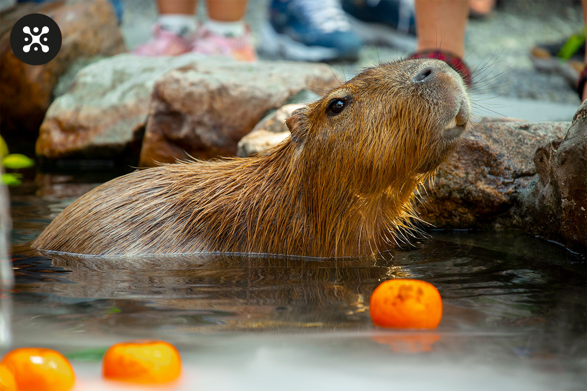

Капібара
Мила та потужна тваринка !

Про тваринку
🦫 Капібара — найбільший гризун у світі, відомий своїм спокійним і дружнім характером
💧 Вона обожнює воду, неквапливо відпочиває та легко знаходить спільну мову з іншими тваринами
😊 Її милий вигляд і добрий погляд одразу дарують усмішку кожному відвідувачу
🌿 Капібара випромінює затишок і гармонію, створюючи атмосферу повного релаксу
👨👩👧👦 Спостерігати за нею — справжнє задоволення для дітей і дорослих
✨ Зустріч із капібарою залишає теплі емоції та бажання повернутися знову
Їжа та харчування
Продукти
- 🥕 Морква
- 🌿 Свіжа трава
- 🥬 Листя салату
- 🍎 Яблука
- 🥒 Огірки
- 🌾 Сіно
- 🍉 Кавун
🥕 Харчування капібари ґрунтується на рослинній їжі та натуральних травах
🌿 Вона із задоволенням поїдає свіжу траву, листя та водяні рослини
🥬 Овочі — важлива частина раціону, особливо морква, салат і кабачки
🍎 Іноді капібару можна побалувати фруктами, але лише в невеликій кількості
💧 Чиста вода завжди має бути поруч, адже капібара багато п’є
🌾 Зерно та сіно допомагають підтримувати правильне травлення
⏰ Харчування відбувається регулярно, без переїдання
✨ Збалансований раціон забезпечує капібарі здоров’я, активність і гарний настрій

Цікаві факти
- Капібара — найбільший гризун у світі 🦫
- Вона дуже соціальна тварина й живе групами 👨👩👧👦
- Капібари чудово плавають і можуть затримувати подих під водою до 5 хвилин 💧
- Вони легко дружать з іншими тваринами, навіть з птахами та кішками 🐦🐱
- Капібари можуть спати у воді, залишаючи на поверхні лише ніс і очі 😴🌊

Дані
| Зріст | Вага | Милість | 50-60 см | 34—63 кг | 100/100 |
|---|
Де ще можна дізнатися про капібар більше ?
ВікіпедіяЮтуб
ТСН